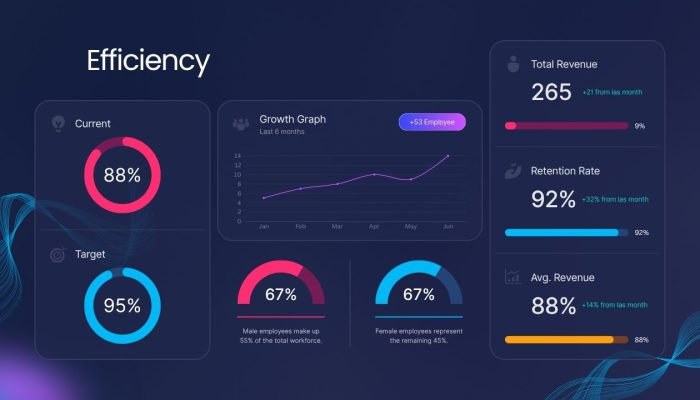

Datos, automatización e IA · Medellín
Datos que deciden. Procesos que se ejecutan solos.
Diseñamos, construimos y operamos software de datos, automatización y agentes de IA para empresas, fundaciones y equipos de producto. Menos trabajo manual, decisiones con evidencia.
Primera sesión sin costo · Respuesta en menos de 24 h hábiles
Pregúntale a Diwilo
IA · responde al instante
Seis frentes que casi siempre terminan conectados
Empezamos por el proceso que más duele y lo conectamos con el resto de tu operación.
Automatización de flujos
Conectamos CRM, correo, hojas y ERP para que la información se mueva sola, con reintentos y alertas.
n8n · APIs · webhooksAgentes de IA
Agentes que atienden clientes, ejecutan tareas y responden con tus datos, y pasan a una persona cuando hace falta.
LLMs · RAG · herramientas propiasChatbots en WhatsApp
Atención en el canal donde ya están tus clientes, con una bandeja compartida para tu equipo.
Chatwoot · WhatsApp BusinessAnalítica y ciencia de datos
Modelos predictivos, segmentación y pronóstico para decidir con evidencia, no con intuición.
Python · SQL · scikit-learnDashboards y tableros
Indicadores en tiempo real con la fuente de cada número documentada y accesos por rol.
Supabase · web dashboardsExtracción de datos
Información estructurada desde documentos, sitios web y bases de datos, lista para usar.
OCR · scraping · ETLCómo pasamos de la tarea repetida al proceso automático
Cuatro etapas, siempre en el mismo orden. Ninguna automatización se construye antes de entender la operación.
Análisis
Visualizamos las repeticiones y oportunidades en la operación: qué se hace a mano, cuántas veces y con qué costo.
Integración
Aplicaciones y fuentes de datos conectadas sin fisuras: CRM, ERP, hojas de cálculo, correo y WhatsApp.
Inteligencia
IA para tomar decisiones y resolver tareas complejas, con un umbral de confianza que deriva a una persona cuando hace falta.
Optimización
Monitoreo continuo, alertas y mejoras para que el sistema escale con el negocio, no contra él.
Ejecuta el flujo y mira el recorrido de punta a punta.
Lo que ves cuando está funcionando
Un tablero en vivo con los indicadores que acordamos al inicio. Cambia de métrica y recorre los meses con el cursor.
Un número, una fuente
Cada indicador documenta de dónde sale y cada cuánto se actualiza. Nadie discute la cifra en la reunión.
Alertas, no reportes
El tablero avisa cuando algo se sale de rango, en lugar de esperar a que alguien lo abra el lunes.
Accesos por rol
Dirección, operación y clientes ven lo que les corresponde, desde el mismo sistema.
Del diagnóstico a la operación, con el mismo equipo
No entregamos un documento y nos vamos: construimos, ponemos a correr y nos quedamos para que siga funcionando.
Diagnóstico, construcción y soporte en un solo lugar
Quien entiende tu proceso es quien lo construye y lo mantiene. Sin traspasos ni requisitos que se pierden en el camino.
Ves avances cada dos semanas
Trabajamos en sprints con demo al cierre de cada uno. El alcance se ajusta sobre lo que ya funciona, no sobre supuestos.
IA donde genera valor, con una persona al lado
Usamos IA cuando resuelve el problema. Si la confianza baja, el caso pasa a una persona y queda registrado.
Misma pregunta, distintas respuestas
Seis preguntas que vale la pena hacer antes de elegir con quién automatizar.
| Pregunta | Freelancer | Agencia tradicional | Software genérico | Diwilo |
|---|---|---|---|---|
| ¿Entienden mi proceso antes de construir? | Depende | — | Diagnóstico sin costo | |
| ¿Se adapta a mi operación (y no al revés)? | — | Hecho a tu medida | ||
| ¿Automatización e IA en el proyecto? | Depende | A veces | Limitada | n8n, agentes y modelos |
| ¿Veo avances con frecuencia? | Depende | Depende | — | Demo cada 2 semanas |
| ¿Se quedan operando y dando soporte? | — | Depende | Soporte mensual | |
| ¿Puedo empezar hoy con algo listo? | — | — | 4 apps propias |
24/7
Operación desatendida
100%
Soluciones a medida
3X
Mayor escalabilidad
4
Apps propias en producción
Casos con resultados
Elige un caso y mira qué se construyó y qué cambió después.

Confían en nosotros
Empresas y organizaciones que ya trabajan con Diwilo.
Ideas para operar con datos e IA
“Hacemos que la tecnología trabaje para ti: IA implementada donde genera valor real, no solo tendencia.”
Y. Alejandro Echavarría · Especialista en IA, ciencia de datos y web dashboards. Enfocado en automatización, análisis y desarrollo de soluciones digitales.
Lo que nos preguntan antes de empezar
¿Qué hace Diwilo?
Diseñamos, construimos y operamos software de datos, automatización y agentes de IA para empresas, fundaciones y equipos de producto. Además tenemos cuatro apps propias listas para usar: Pedidos, Nutrición, Citas y Residentes.
¿Cuánto cuesta un proyecto?
Depende del alcance. Por eso empezamos con un diagnóstico de 1 a 2 semanas, cuya primera sesión de 45 minutos no tiene costo. Después te entregamos una propuesta por escrito con alcance, metodología, tiempos e inversión. Las apps se pagan con una suscripción mensual.
¿Cuánto tarda?
Un proyecto cerrado toma entre 4 y 12 semanas según el alcance. Trabajamos en sprints de dos semanas y al cierre de cada uno te mostramos lo construido funcionando.
¿Qué pasa después de entregar?
Con el plan de operación y soporte monitoreamos los flujos y modelos, corregimos incidentes y hacemos mejoras continuas con horas mensuales renovables.
¿Mis datos están seguros?
Tratamos los datos conforme a la Ley 1581 de 2012, con accesos por rol, cifrado en tránsito y en reposo y registro de accesos. Firmamos un acuerdo de confidencialidad (NDA) si lo necesitas.
¿Con qué herramientas trabajan?
n8n para orquestar automatizaciones, Python para datos y modelos, Supabase para bases de datos y accesos, Chatwoot y WhatsApp Business para atención, y servidores GNU/Linux o Cloudflare para desplegar. Elegimos según tu caso, no al revés.
¿Por dónde empiezo?
Cuéntanos qué tarea repite tu equipo cada semana: agenda el diagnóstico, escríbenos por WhatsApp o pregúntale al asistente de arriba.
Habla con alguien que entiende tu negocio y puede construir la solución
Escríbenos y te decimos qué se puede automatizar, con qué esfuerzo y en qué orden. Sin costo.